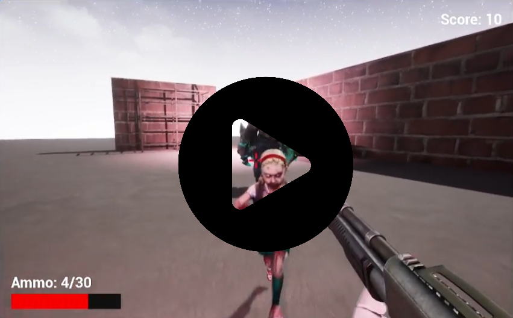

Startup Nomadify aimed to create an AI-driven educational games that teaches the history of Kazakhstan through interactive quests, 3D models, animations, and an AI assistant.
Key Contributions:
● Led an 8-member team
● Conducted weekly meetings
● Defined project scope, milestones, and development timeline
● Coordinated tasks across multidisciplinary teams
● Created a project prototype and presented it at multiple startup competitions
[Prototype Demo]
[Presentation]

Appendicitis surgery simulator is an interactive educational game that teaches users how to perform an appendectomy. Designed for high school students, this simulator guides them through the surgical procedure in a safe and controlled environment, helping them understand the steps and explore medical careers.
Key Contributions:
● Developed the architecture and core game mechanics
● Created user widgets and designed tutorial level for the surgery simulator
● Produced animations in Cascadeur
[Demo]

Academic Angel is a web application designed to enhance student performance with GPA prediction, explainable AI, and LLMs.
Key Contributions:
● Trained XGBoost and Random Forest models for GPA prediction
● Integrated SHAP for explainability
● Connected with OpenAI API for LLM feedback
● Created and deployed a web application
[Demo]
[Academic Paper]

AI-Powered Multimodal Evaluation System for Job Interviews is a web application for fair and transparent job interview assessment, combining technical evaluation with emotion and personality analysis from interview videos.
Key Contributions:
● Served as project manager for a 5-member research team, coordinating task assignment and leading weekly progress meetings
● Integrated speech transcription, emotion recognition, and personality inference models into a unified Streamlit application
● Implemented a behavioral assessment module using the OpenAI API
● Built automated personality and emotion analysis visualizations for the dashboard
[Presentation+Demo]

Aibike is a Virtual Teacher, embodied as a photo-realistic avatar in Unreal Engine, powered by ChatGPT, Whisper, and Soyle which can make education more immersive, interactive, and personalized.
Key Contributions:
● Added 3D models of national clothing and a realistic classroom environment, enhancing user engagement
● Added a dynamic head-and-eye movement feature for the teacher avatar
● Adapted the project for VR using Oculus Quest 3, providing a fully immersive educational experience
● The project was presented at Nazarbayev University’s Open House Day
[Report+Demo]
[Article about Project]

SchedulEase is an intelligent, automatic scheduling application that helps you make the most of your time by integrating seamlessly with Google Calendar. It analyzes your existing events, identifies free slots, and integrated LLM suggests optimal allocations for new tasks—so you can focus on what truly matters.
Key Features:
● Calendar Analyzer
● Smart Planner
[Demo]

Farmers' Market is a multiplatform application (web and mobile) that empowers farmers to manage and sell products like fruits, vegetables, and seeds.
Key Contributions:
● Led a team of 7 developers
● Scheduled and conducted weekly meetings
● Developed system architecture and UML diagrams
● Created project documentation
● Prepared and delivered the project's final presentation
[Presentation]
[Project Documentation]

Scientific Journals and LLMs: Behind the Scenes of Scientific Writing is a final project for CSCI 447 (Machine Learning: Theory and Practice) course. The research investigates the use of large language models (LLMs) in social science research papers.
[Paper]
[Presentation]

LaughSense is a Telegram bot that increases engagement in the group chat.
Key Contributions:
● Generated a synthetic dataset with 5000 unique messages.
● Trained Logistic Regression, XGBoost, and Random Forest models for message classification based on Vader Sentiment Analysis and TF-IDF features.
● Created an agentic system that analyzes messages in the chat and creates jokes.
● Created a Telegram bot for message analysis.
[Demo]

Attitudes of Computer Science and Engineering Students towards the Utilization of Textual AI as Personal Tutors in Kazakhstani Education is a final project for the course WCS 210 (Technical and Professional Writing). The research aims to examine students’ attitudes, perceived effectiveness, and demand for using textual AI as personal tutors in higher education in Kazakhstan.
Key Contributions:
● Conducted a survey for 40 students.
● Analyzed data with Voyant-tools and LIWC.
● Created graphics for data visualization.
[Paper]

Zombie Dodge is a first-person shooter game.
Key Contributions:
● Created game mechanics and user widgets
● Added animations and particle effects
● Designed a level
● Developed AI controls for zombie bots
[Demo]

Dream Island and Underwater Roman Civilization are levels created on Unreal Engine for a language learning game.
Key Contributions:
● Integrated third-party assets and 3D models into levels.
● Configured lighting and underwater water physics.
● Designed explorable environments aligned with language learning mechanics.
● Optimized the scenes for performance and visual clarity.
[Demo]

Completed a Graphic Design course and worked as a designer for three academic clubs, where I created 40+ digital and print materials, including posters, banners, merchandise, and event presentations. In parallel, I applied my design skills to create clear and effective visualizations for research papers and academic posters, translating complex ideas and data into accessible visuals.
[Design Portfolio]